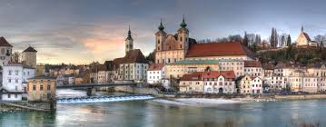

Steyr am Nationalpark – natürlich romantisch!
Steyr am Nationalpark, reich an Kultur, Industrie, Natur und Architektur ist eine lebens- und liebenswerte Kleinstadt.



Aktivitäten in Steyr:
- Nachtwächter: Zeitreise in die Vergangenheit.
- Segway: Steyr erschweben.
- Nationalpark: Natur pur in 30 Minuten.